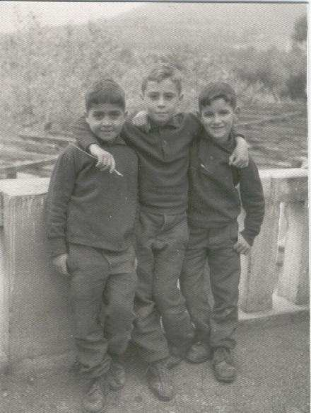

Jesús Martínez y Sánchez de Neyra
Rebuscando entre mis papelorios
he encontrado esta foto, la cual envío para ver si alguien
es capaz de ponerle nombre a las caras. Yo soy el del medio, pues
por desgracia mis recuerdos no llegan a tanto. Me parece que Juan
Díaz del Corral comentaba sobre las fotos que nos hacían,
yo creo que eran para el profesor de Gimnasia y F.E.N., para hacernos
de la O.J.E., de la cual era el jefe local. Este profesor se llamaba
Juan Berruezo, y como comentaba otro de vosotros, que estaba liado
con Araceli, profesora de Geografía, ¿os acordáis
del chisme que corrió por el colegio, de que estando ellos
dos en la playa del Puntal en Laredo, les subió la marea y
se les llenó el coche de agua.  |